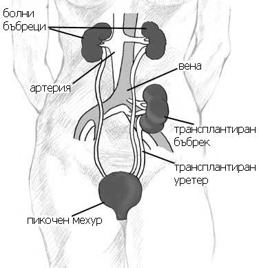

Бъбречната трансплантация е хирургическа операция, при която се присажда бъбрек при пациенти, които са в терминален (IV или V-ти) стадии на ХБЗ (Хронично Бъбречно Заболяване). Присаденият бъбрек поема изцяло функцията на двата болни бъбрека на пациента. За тази интервенция се използват донори, които могат да са:
На такава оперативна интервенция се подлага пациенти на възраст до 60-65 години. Преживяемостта за срок от 1 година след трансплантацията е 95%, а за срок от 3 - 5 години е 70 - 90%. Най-дългата преживиямост след такава интервенция в България е около 30 години.
Първата бъбречна трансплантация на дете в България е извършена през 1968 г. в Института по спешна медицина "Пирогов" с благодарение на френски и български екипи от отделението по Детска урология. А на възрестен бе извършена през 1969 г. в Александровска болница от екипите на проф. Никола Атанасовски, проф. Кольо Николов, Куманови Доновски в клиниката по урология. Преди това са правили опити с няколко безпородни кучета.
Най-благоприятния изход от терминалния стадии на ХБН (Хронична бъбречна недостатъчност), при който органът напълно или почти напълно е престанал да отделя с урината отпадните продукти и да регулира нивата на електролитите в организма е бъбречната трансплантация. Основната причина за извършване на бъбречната трансплантация е хроничната бъбречна недостатъчност. А противопоказанията са:
Преди извършването на тази оперативна интервенция, трябва да се извършват много кръвни изследвания - хематологични, биохимични, имунологични, вирусологични, имунохематологични - кръвна група с Rh фактор. Трабва да се определи тъканната съвместимост между донора и реципиента. Колкото по-висока е тази съвместимоост, толкова е по-лека е реакцията на организма да отхвъри присадения орган.
Когато органът се взима от жив донор, тогава операциите по експлантация и трансплантация се провеждат едновременно. Първата операция продължава около 3 - 4 часа, докато втората - около 3 - 6 часа в зависимост от евентуалните сраствания при предишни оперативни интервенции в областта на илиачната ямка на реципиента - хернии или други урологични операции. И двамата пациенти се въвеждат в обща балансирана анестезия. Преди операцията на донора се поставя нискомолекулен хепарин (медикамент за разреждане на кръвта), за да се предотврати кръвосъсирването след премахването на бъбрека и диуретици (лекарства за увеличаване на диурезата). Изваждането на донорския бъбрек става по три оперативни метода:
А когато органа е взет от трупен донор, тогава максималния срок за трансплантиране е 36 часа след експлантацията. Следоперативното възстановяване на донора след класическата отворена нефректомия е от 8 до 12 седмици, докато при лапароскопската и робот-асистираната - около 2 - 4 седмици.
След изваждането на донорския бъбрек се пристъпва към т.нар. перфузия чрез основния артериален съд. След което се пристъпва към трансплантирането в извънперитонеално в долния десен или ляв край на корема на реципиента, при което екип от уролози и съдов хирург правят съдовите анастомози. Накрая уретера се имплантира към пикочния мехур, с което операцията по бъбречната транспланация е приключила.
Обикновено собствените бъбреци на реципиента не се премахват, но има изключения:
Както при всяка оперативна интервенция, така и при бъбречната транспланатция могат да настъпят най-различни усложнения по време или след операцията.
Най-честите усложнения биват:
Лечението е различно в зависимост от вида на усложнението. При хирргичните и урологичните лечението е оперативно, при имунологичните - прилагат се по-големи дози на имуносупресорите - циклоспорини, такролимус, еверолимус, сиролимус и кортикостероиди като пулс терапия. А при инфекциозните се прилагат - антибиотици, антивирусни и антимикотични препарати.